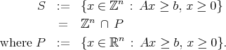
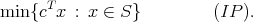
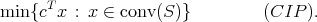
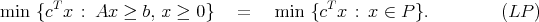
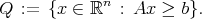
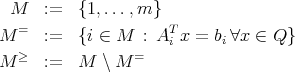
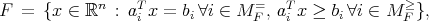
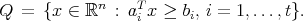
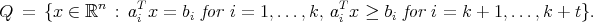

1 LP Relaxations
We want to solve an integer program by solving a sequence of linear programs. We can relax the
integrality constraints to give an LP relaxation. Let

Since we restrict x ≥ 0, the polyhedron P has extreme points if it is nonempty.
Theorem 1 The convex hull of S is a polyhedron.
The proof is in Nemhauser and Wolsey. It is important to note that the extreme rays of conv(S) are
the extreme rays of P.
Our integer program of interest is

We relate this to the linear program

We don’t know the constraints of the linear program (CIP) explicitly.
Theorem 2 For any c  n, we have:
n, we have:
- The objective value of (IP) is unbounded below if and only if the objective value of
(CIP) is unbounded below.
- If (CIP) has a bounded optimal value then it has an optimal solution that is an optimal
solution to (IP). This optimal solution is an extreme point of conv(S).
- If x0 is an optimal solution to (IP) then it is an optimal solution to (CIP).
The proof is in the text. It relies on the fact that the minimizer of a concave function over a
convex set is at an extreme point.
Corollary 1 (IP) is either unbounded or infeasible or has an optimal solution.
So in principle, could solve (IP) by solving the linear program (CIP). But we don’t know a
polyhedral description of conv(S).
Look at the LP relaxation

We can relate (LP) to (IP) in the following theorem. The proof exploits the fact that S ⊆ P.
Theorem 3 Let zLP and zIP be the optimal values of (LP) and (IP) respectively.
- If P = ∅ then S = ∅.
- If zLP is finite then either S = ∅ or zIP is finite. If S≠∅ then zIP ≥ zLP .
- If xLP is optimal for (LP) and if xLP ℤn then xLP is optimal for (IP).
An integer program has many LP relaxations. The aim of a cutting plane approach is to
add linear constraints to the original LP relaxation in order to tighten up the LP
relaxation. These linear constraints are satisfied by every point in S but they might
not be satisfied by every point in P. Adding these constraints gives an improved LP
relaxation of the integer program. We would like to improve the relaxation so that it
resembles conv(S) in some sense, at least in the neighborhood of an optimal solution
to (IP).
2 Describing Polyhedra by Facets
We would like to get a polyhedral description of conv(S). We’d like as compact a description as
possible. We first set up some notation. Given a matrix A m×n and a vector b m, we
construct the polyhedron

Note: We have changed notation from Section 1. In particular, any nonnegativity constraints are
included in the system Ax ≥ b.
We construct three sets of indices:

We also use the notation A=, A≥, b= and b≥ in an analogous way.
Definition 1 The inequality πT x ≥ π
0 is a valid inequality for Q if it is satisfied by all
points in Q. We also represent the inequality using the pair (π,π0).
Definition 2 Let πT x ≥ π
0 be a valid inequality for Q. Let H = {x n : πT x = π
0} so
F := Q ∩ H is a face of Q. Then (π,π0) represents F. If F≠∅ then (π,π0) supports Q.
We extend the notation M=, M≥ to the face F using the notation M
F =, M
F ≥.
Proposition 1 If F is a nonempty face of Q then F is a polyhedron and

where MF = ⊇ M= and M
F ≥ ⊆ M≥.
Proposition 2 If F is a facet of Q then there exists some inequality akT x ≥ b
k with k M≥
that represents F.
Proof. Now dim(F) = dim(P)-1, so rank(AF =,b
F =) = rank(A=,b=) + 1. Therefore,
we only need one inequality in M≥ that is in M
F =, and this inequality represents the
facet. □
Proposition 3 For each facet F of Q, one of the inequalities representing F is necessary
in the description of Q.
Proposition 4 Every inequality aiT x ≥ b
i for i M≥ that represents a face of Q of
dimension less than dim(Q) - 1 is irrelevant to the description of Q.
Thus, later we will emphasize finding facets of the convex hull of S.
With these propositions, we can now state a theorem showing how a polyhedron can be minimally
represented using linear equalities and inequalities.
Theorem 4
- A full dimensional polyhedron Q has a unique (to within scalar multiplication) minimal
representation by a finite set of linear inequalities. In particular, for each facet Fi of Q with
i = 1,…,t, there is an inequality aiT x ≥ b
i (unique to within scalar multiplication)
representing Fi and

- If dim(Q) = n - k with k > 0 then let t be the number of facets Fi of Q, and we
have

The set {(ai,bi) : i = 1,…,k} is a maximal set of linearly independent rows of (A=,b=). For
i = k + 1,…,k + t, (ai,bi) is any inequality from the equivalence class of inequalities
representing the facet Fi of Q.
The aim in a cutting plane approach is to try to develop a minimal description of the polyhedron
conv(S), at least in the neighborhood of an optimal point to (IP). This theorem tells us that it is
enough to determine all the facets of conv(S), as well as a description of the affine hull of
conv(S).